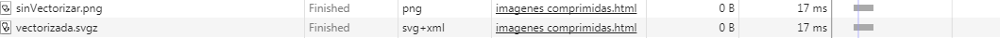

Imagen sin comprimir, su tamaño es: 7,48 MB

Imagen comprimida, su tamaño es: 4,19 MB
Como podemos observar, apenas hay diferencia entre las 2 imágenes y hay casi 3 MB de diferencia. He reducido de tamaño la imagen con una herramienta llamada Compressor.io la cual es muy sencilla de usar y muy intuitiva.

Como vemos en esta imagen, la diferencia de los tiempos de carga es bastante grande y la diferencia de calidad de las imagenes es irrisoria. Por lo tanto, será interesante comprimir todas las fotos jpg de nuestra página para reducir en gran cantidad los tiempos de carga.
Zoom a la imagen sin comprimir
Zoom a la imagen comprimida
Para comprobar si la pérdida de calidad era grande he hecho zoom en ambas imágenes y como podemos observar apenas hay diferencia de resolución.
VECTORIZACIÓN DE ICONOS
Icono sin vectorizar, después de comprimirlo su tamaño es 2KB

Icono vectorizado, después de comprimirlo su tamaño es también 2KB
 En este caso, los tiempos de carga de los dos iconos son iguales por lo tanto, en mi opinión, será mejor usar el icono vectorizado ya que la calidad es visiblemente mejor.
Cargando ...